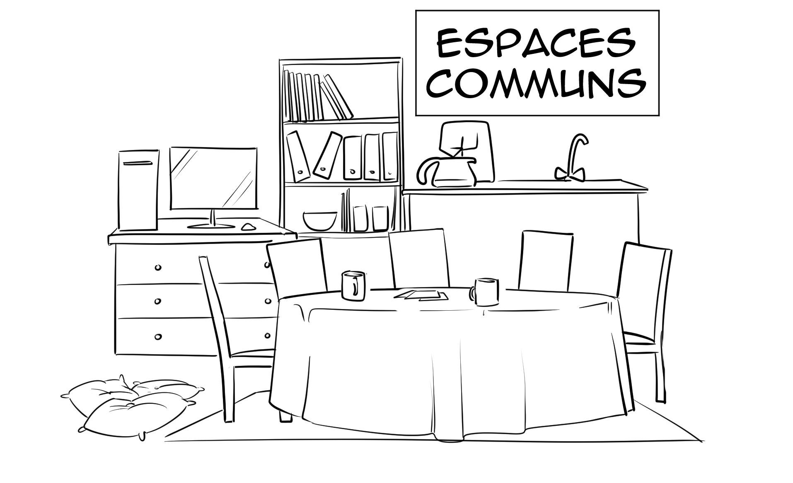

Le cœur battant de la ferme 🏡
Les communs sont bien plus que de simples bâtiments utilitaires : c'est la véritable maison commune de toute la ferme ! C'est ici que bat le cœur de notre projet collectif au quotidien.
C'est dans cet espace central que se déroulent toutes nos réunions d'équipe. Autour d'une grande table, nous planifions les semaines à venir, prenons les décisions importantes ensemble et partageons nos idées pour faire évoluer la ferme de Chevronsart.
Accueillir, héberger et partager 🛌
Faire vivre une ferme agroécologique diversifiée demande beaucoup de bras et d'énergie ! Nous avons donc aménagé les communs pour offrir un véritable confort à tous ceux qui travaillent sur le domaine.
Le bâtiment est équipé d'une grande cuisine partagée, de douches et de chambres. Cela nous permet d'y accueillir chaleureusement nos travailleurs réguliers, nos stagiaires, mais aussi les nombreux wwoofeurs et bénévoles qui viennent de tous horizons pour nous prêter main-forte tout en apprenant le métier.
Un lieu ouvert à nos coopérateurs ☕
L'esprit de notre coopérative ne s'arrête pas à la production agricole, il se vit aussi dans les relations humaines. C'est pourquoi cet espace convivial n'est pas réservé qu'à l'équipe interne : il est grand ouvert à tous nos coopérateurs !
Que ce soit pour venir boire un café le matin, discuter de l'évolution des cultures avec les paysans, ou simplement passer un moment de détente après avoir récupéré votre panier, la porte des communs vous est toujours ouverte. C'est le lieu idéal pour cultiver nos liens !